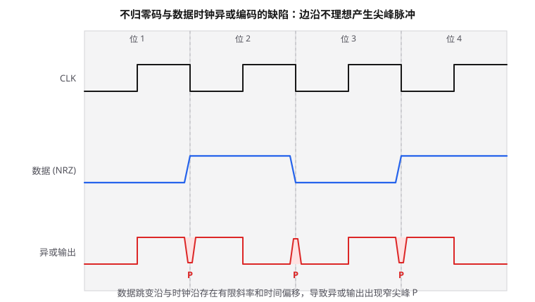
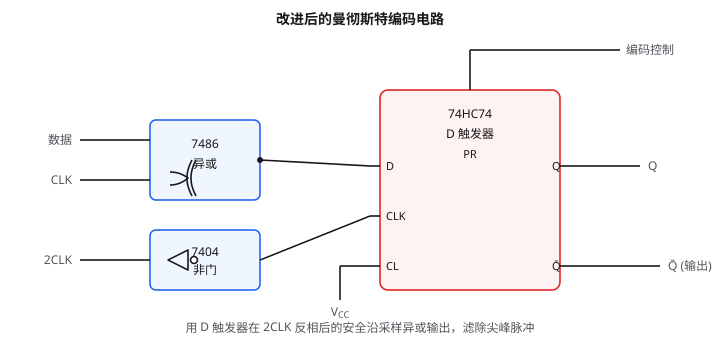
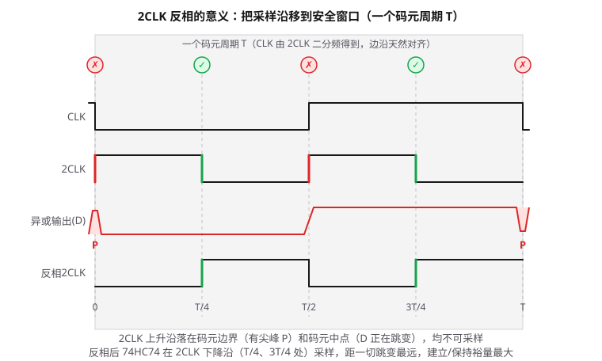
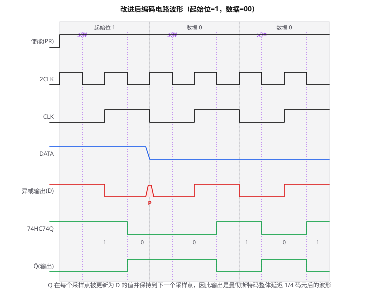

曼彻斯特码编码和译码
曼彻斯特码（Manchester Code）是一种将时钟信息嵌入到数据流中的自同步编码方式，广泛应用于 RFID、以太网、磁条卡等领域。本文从最基本的"异或编码法"出发，重点分析这种方法因信号边沿不理想而产生尖峰脉冲的问题，以及如何用 D 触发器改造电路来消除尖峰。
一、曼彻斯特码的基本概念
不归零码（NRZ）用高电平表示"1"、低电平表示"0"，它本身不携带时钟信息，接收端需要额外的时钟同步信号才能正确采样。曼彻斯特码则规定：每个码元的中间时刻必定发生一次电平跳变，接收端只需检测这个跳变就能同时恢复数据和时钟，因此是一种"自同步码"。
常见的编码约定（G.E. Thomas 约定，也是本文采用的约定）为：
- 码元"1"：前半周期高电平、后半周期低电平，即码元中间出现下降沿（记作
10）； - 码元"0"：前半周期低电平、后半周期高电平，即码元中间出现上升沿（记作
01）。
由于每个码元中间都有跳变，曼彻斯特码不存在长时间的连续高电平或低电平，接收端始终能从跳变中提取同步信息。
二、最简单的编码方法：数据与时钟异或
从 NRZ 码到曼彻斯特码，最直观的方法是把 NRZ 数据与数据时钟做异或运算：
\[\text{Manchester} = \text{NRZ} \oplus \text{CLK}\]
其中时钟 CLK 的频率等于码元速率，且每个码元周期内 CLK 前半周期为低、后半周期为高。此时：
- 当 NRZ = 1 时，输出 =
1 ⊕ CLK=\overline{CLK}，即前高后低，对应码元"1"； - 当 NRZ = 0 时，输出 =
0 ⊕ CLK=CLK，即前低后高，对应码元"0"。
这种方法只用一个异或门就能实现，看似简单，但在实际电路中存在严重缺陷。
三、异或法的缺陷：尖峰脉冲
理想情况下，时钟和数据的跳变沿都是垂直的方波，异或输出干净利落。但实际电路中，任何电平跳变都有有限的上升/下降时间，而且时钟沿与数据沿之间还存在时间偏移（skew）。当 NRZ 数据恰好在时钟跳变的同一时刻发生翻转时，异或门的两个输入会在极短的时间内经过一系列中间电平组合，从而在输出端产生一个很窄的尖峰脉冲（Glitch，记作 P）。

以上图为例，数据序列为
0 1 0 1，在每个码元边界处数据都发生翻转，而时钟也恰好在码元边界跳变：
- 在 x ≈ 270 处：数据由 0→1，时钟由 1→0。理想异或结果在跳变前后都为 1，但由于两个沿并非完全同步，中间会短暂出现"CLK=1、DATA=1"或"CLK=0、DATA=0"的状态，使异或输出瞬间跌到低电平，形成一个负向尖峰；
- 在 x ≈ 420 处：数据由 1→0，时钟由 1→0，理想输出前后都为 0，中间却短暂出现"CLK=1、DATA=0"或"CLK=0、DATA=1"的状态，使输出瞬间冲到高电平，形成一个正向尖峰。
这些尖峰脉冲宽度极窄（往往只有纳秒级），但幅度足以达到逻辑电平阈值，会被后级电路误认为是有效的码元跳变，导致编码错误。因此简单异或法不能直接用于实际的曼彻斯特编码电路。
四、改进电路：加入 D 触发器消除尖峰
解决思路非常经典：用一个 D 触发器在"安全时刻"对异或输出重新采样。只要采样时刻避开尖峰出现的时间窗口，触发器输出的就是干净的曼彻斯特码。
4.1 电路结构

电路由三块芯片组成：
| 器件 | 作用 |
|---|---|
| 7486（异或门） | 完成 NRZ 数据与 CLK 的异或，输出带尖峰的曼彻斯特码，送至 D 端 |
| 7404（非门） | 将 2CLK 反相后送入 D 触发器的时钟端 |
| 74HC74（D 触发器） | 上升沿触发，在反相 2CLK 的安全沿对 D 端采样，从 Q̄ 端输出干净的曼彻斯特码 |
关键点在于：需要一个频率为数据时钟 2 倍的 2CLK 信号（可由载波分频得到）。74HC74 是上升沿触发的触发器，其时钟端接的是经过 7404 反相后的 2CLK，因此触发器实际在 2CLK 的下降沿 采样 D 端。
为什么要把 2CLK 反相？关键在于相位关系：CLK 本身就是 2CLK 二分频得到的，两者边沿天然对齐——2CLK 的上升沿恰好落在码元边界和码元中点，而不是 1/4、3/4 处。这两个位置都不能采样：边界正是尖峰 P 出现的时间窗口；中点则是曼彻斯特码正常的中间跳变、异或输出正在翻转的时刻，在这里采样同样不可靠。距离所有跳变最远的安全点是每个码元的 1/4 和 3/4 处，恰好对应 2CLK 的下降沿。74HC74 只认上升沿，所以用 7404 把 2CLK 反相，"下降沿"就变成了触发器时钟端的"上升沿"。可见反相的本质是把采样时刻平移 1/4 个码元周期，从"与跳变对齐"挪到"两次跳变的正中间"，留出最大的建立/保持裕量。

4.2 为什么能消除尖峰
尖峰 P 出现在码元边界处（数据与时钟同时翻转的时刻），而 2CLK 的下降沿出现在每个码元周期的 1/4 和 3/4 位置——也就是远离码元边界的中间区域。此时异或输出已经稳定，触发器采样到的就是正确的电平，尖峰被自然滤除。

以上图（起始位=1，数据=00）为例说明：
- 使能（PR）端：初始为低电平，把 74HC74 异步预置为 Q=1；使能拉高后，触发器正常工作。
- 异或输出（D 端）：在码元边界 x≈300 处仍然存在尖峰 P，但在采样时刻（紫色虚线）D 端电平已经稳定。
- 74HC74Q：触发器在 2CLK
的下降沿（图中紫色虚线，位于每个码元的 1/4 和 3/4 位置）对 D
端采样，每次采样后保持该值直到下一个采样点——也就是说，Q
的每个电平都"从当前采样点开始、保持到下一个采样点"，持续半个码元。依次采样得到序列
1 0 0 1 0 1，正是"起始位 1、数据 00"对应的曼彻斯特码10 | 01 | 01（见波形图 Q 下方的绿色数字，每个数字对应半个码元）。 - Q̄（输出）：取 Q 的反相作为最终输出，信息与 Q 完全等价，只是极性相反。
可以看到，虽然 D 端在 x≈300 处有尖峰，但最近的采样点在 x=255 和 x=345，都远离尖峰，所以触发器完全不会采到错误电平。
关于末位"0"为什么有三段电平。 由于采样点位于码元的 1/4、3/4 处，Q 的输出实际上是理想曼彻斯特码整体延迟 1/4 个码元周期后的结果。因此在输入数据的某个码元区间内，Q 的波形会同时包含前后两个码元的信息：区间的前 1/4 是上一码元后半段的"残留"，中间是当前码元前半段，后 1/4 是当前码元后半段。当相邻两个码元相同（例如此处的 0、0）时，上一码元后半段为高、当前码元前半段为低，二者不同，于是呈现出"高-低-高"三段电平；当相邻码元相反时，这两段电平恰好相同而合并，看上去就只有两段。这只是固定延迟带来的视觉表现，并不改变"每个码元正中间必有一次跳变"的曼彻斯特码本质，接收端据此仍能正确解码。注意 Q 与 Q̄ 互为反相，所以 Q̄ 的末位呈现"低-高-低"。
4.3 小结
改进电路的本质是：异或门负责"生成"曼彻斯特码，D 触发器负责"整形"。用一个 2 倍频时钟在安全位置采样，以极小的硬件代价消除了组合逻辑的竞争冒险（尖峰脉冲）。这也是数字电路中消除毛刺的通用方法——"寄存器打一拍"。
五、曼彻斯特码的译码
译码的任务是把接收到的曼彻斯特码还原为编码前的 NRZ 基带信号。在 RFID 读写器中，译码通常由 MCU 完成。为此引入起始位、信息位、结束位的概念：
- 起始位采用"1"码；
- 信息位的 1 用
10表示，0 用01表示； - 结束位采用无跳变的低电平，即
00。
由此得到完整的码表：
| 数字组合 | 比特值 |
|---|---|
| 00 | 结束位 |
| 01 | 0 |
| 10 | 1 |
| 11 | 非法码 |
5.1 译码步骤
MCU 用 2 倍数据时钟频率对输入的曼彻斯特码进行采样（即每个码元采两个样点），然后按以下规则译码：
- 判断起始位：检测到
10组合，说明一帧数据开始； - 转换信息位：把读到的
10译为"1"，01译为"0"，还原出 NRZ 数据； - 判断结束位：若读到
00组合，表示本帧数据结束； - 冲突检测：
11是非法码，正常编码不会出现。一旦出现11，说明发生了传输错误或多标签同时响应的碰撞冲突。
曼彻斯特码能用于碰撞检测，而 NRZ 码不具备这一特性——这也是曼彻斯特码在 RFID 等多址接入场景中被广泛采用的重要原因。
六、总结
- 曼彻斯特码通过码元中间的固定跳变实现自同步，1 对应下降沿、0 对应上升沿；
- 直接用"NRZ ⊕ CLK"编码会因信号边沿不理想产生尖峰脉冲，不可直接使用；
- 在异或门后级联一个由 2CLK 驱动的 D 触发器，利用 2CLK 下降沿在远离码元边界的安全时刻采样，即可滤除尖峰；
- 译码时用 2 倍频采样，按
10→1、01→0、00→结束、11→非法的规则还原数据，同时可实现碰撞检测。